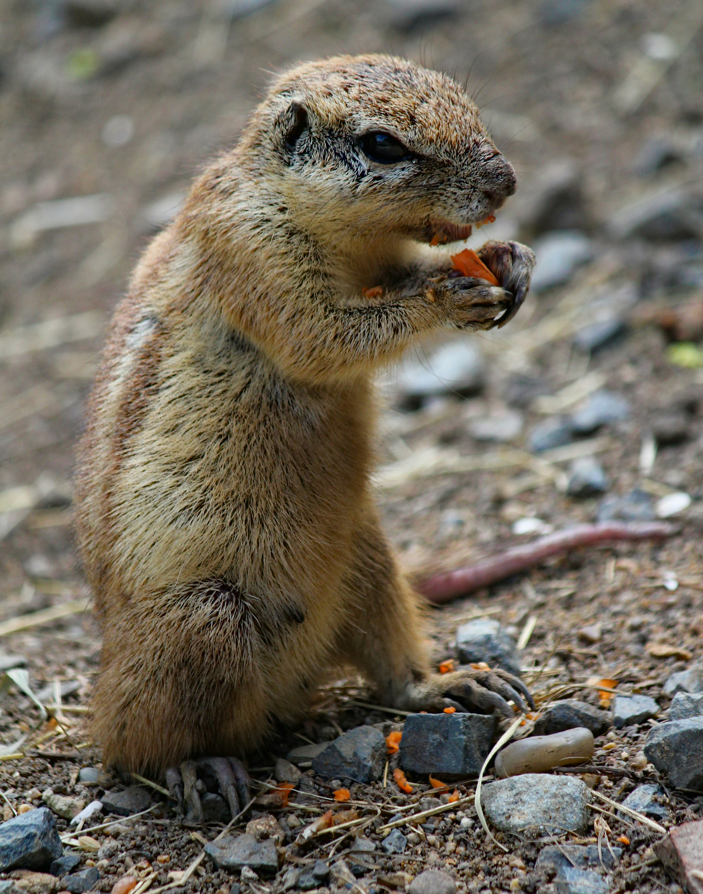

Understanding Gophers
Gophers are solitary burrowing rodents that build extensive tunnel systems and primarily feed on plant roots[1]. Their digging aerates soil but can harm gardens and lawns[1]. Knowing their habits helps you choose humane control methods.

Humane Control Methods
Physical Barriers
Install gopher baskets or mesh barriers around plant roots and garden beds. Bury hardware cloth or wire mesh at least one foot below the soil to keep gophers from tunneling into protected areas[2].
Natural Deterrents & Repellents
Some plants like castor beans, daffodils, garlic and lavender produce scents that gophers dislike[3]. Applying castor oil sprays, coffee grounds and peppermint oil near tunnel entrances also creates an unpleasant environment[3]. These repellents may require regular reapplication.
Noise & Vibrations
Gophers and moles are sensitive to vibrations and noise. Wind chimes, portable radios placed near tunnels and ultrasonic devices can deter them by creating disturbances[4].
Live Trapping & Relocation
Live traps capture gophers so they can be relocated away from residential areas[4]. Place traps along active tunnels and check frequently. Relocating captured animals to suitable habitats helps minimize harm.
Encourage Natural Predators
Predatory birds like owls and hawks naturally control gopher populations. Installing owl boxes or perches encourages these predators[4]. Pets such as cats or dogs may also discourage gopher activity[4].
Prevention & Garden Design
Raised Beds & Fencing
Construct raised garden beds lined with hardware cloth to protect roots[2]. Gopher-proof fencing with mesh openings smaller than three‑quarters of an inch should extend above and below ground to deter digging[2].
Soil & Plant Management
Choose gopher-resistant plants and amend soil to improve drainage and reduce moisture, making the area less attractive[2]. Keep the garden tidy by regularly weeding, pruning and removing debris to reduce shelter for gophers[2].
Regular Monitoring
Inspect your garden for fresh mounds or chewed plants and act quickly if you find signs of gopher activity. Early intervention helps prevent damage from escalating[2].